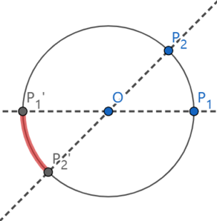
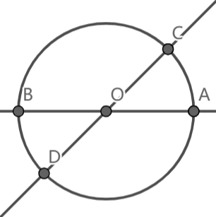

关于1996年普特南A-6题的讨论
引子
Four points are chosen at random on the surface of a sphere. What is the probability that the center of the sphere lies inside the tetrahedron whose vertices are at the four points? (It is understood that each point is independently chosen relative to a uniform distribution on the sphere.)
原题
此题为1996年第53届普特南A-6题。题面英文原文已在引子中给出。中文翻译如下：
在球体的表面随机选择四个点，问球心位于以四点为顶点的四面体内部的概率是多少？（每个点都是独立选择的。）
翻译可能不精确，建议根据原文辅助理解。
先简单聊聊
我对概率论等并没有深入的了解，看到这题之后“随机”字眼让我不知道如何处理，也正是因此我无法给出详细证明的原因。证明是一件苛刻的事，等日后我有了足够的数学基础，达到可以证明此题，我会试着在此页写下我的证明过程。
此类三维的题目不妨先化作更低维度，再探寻普遍规律。例如在二维时，可以化为：
在圆上随机选择三个点，问圆心位于以三点为顶点的三角形内部的概率是多少？
当随意选择两点$P_1$、$P_2$后，若想$\triangle P_1P_2P_3$过圆心，则$P_3$只可能在$\overset{\frown}{P_1P_2}$关于圆心$O$在$\odot O$的投影弧上，也就是下图中的加粗部分。

此时圆心在$\triangle P_1P_2P_3$内的概率即为在$\odot O$上随意取点，其在$\overset{\frown}{P_1’P_2’}$上的概率，即为$\frac{\angle P_1OP_2}{2\pi}$。（我们定义$0<\angle P_1OP_2<\pi$）
由于任意取点$P_1$、$P_2$，故$\angle P_1OP_2$的平均期望为$\frac{\pi}{2}$，此时$P=\frac{1}{4}$。
因此在圆上随机选择三个点，圆心位于以三点为顶点的三角形内部的概率为$\frac{1}{4}$。
我们只需要将其推广到球体上，此时若想四面体包含圆心，则第$4$点一定在球面三角形$P_1P_2P_3$关于球心$O$的投影上。也就是说，落点使得“题目条件符合”的区域由线变为面，此时只需按照曲面的平均期望计算即可。
我最后没解释的通。
回头看特殊的结果
在二维时，得出的答案十分特殊，我们是否能够从另一方面解释$\frac{1}{4}$作为概率是如何出现的。
不将其看作固定两点，而是过圆心作两条任意直线，分别于$\odot O$交于$A$、$B$、$C$、$D$四点。我们在每条直线上各任取一点，作为前一个方法中固定的$2$点。

此时，在圆上随意取的第三点$E$一定在$\overset{\frown}{AC}$、$\overset{\frown}{BC}$、$\overset{\frown}{AD}$、$\overset{\frown}{BD}$中。任取两条直线，随机取两点有四种可能性：$A$和$C$、$A$和$D$、$B$和$C$、$B$和$D$，这四种可能性若使点$E$“符合题目条件”，则分别对应$E$在$\overset{\frown}{BD}$、$\overset{\frown}{AD}$、$\overset{\frown}{BC}$、$\overset{\frown}{AC}$上。也就是说，每个$E$的位置对应$1$种“符合”的情况，与另外$3$种“不符合”的情况。
二维时的平均期望即为$\frac{1}{4}$。
三维时，即作过球心的三条任意不重合直线，交球表于$6$点，在每条直线上各任取一点，作为固定的$3$点。
此时便分出了$8$种不同的取点情况，其中每个第四点的位置对应$1$种“符合”的情况与$7$种“不符合”的情况。即平均期望为$\frac{1}{8}$。
因此在球体的表面随机选择四个点，球心位于以四点为顶点的四面体内部的概率为$\frac{1}{8}$。
另一种严谨的解法
上述的仅为几何直觉，我相信是写不成严谨的证明过程的。
以下附另一种解法，原文标题Capturing the Origin with Random Points: Generalizations of a Putnam Problem。你也可以在网页查看。
欧文的解法
假设随便取三点，称其为点$X$、点$Y$、点$Z$，则存在球面三角形$XYZ$在球面上。现尝试取一点$K$，令四面体$KXYZ$包括球心$O$。
延长$XO$、$YO$、$ZO$分别交球面于点$X’$、点$Y’$、点$Z’$。我们发现，对于$XYZ$，点$K$取在$XX’$或$YY’$或$ZZ’$上时题目条件恰好成立。更准确地说，这三条线规定了点$K$的取法空间边界，即对于任何在球面三角形$X’Y’Z’$上的点$K$，题目条件成立。
显然，球面三角形$XYZ$与球面三角形$X’Y’Z’$面积相同。只需找出球面三角形$XYZ$与球体表面积$4\pi r^2$之比，并相除求得点$K$存在于球面三角形$X’Y’Z’$之内的概率。
令球面三角形中两两夹角角度为$a$、$b$、$c$，面积为$a+b+c-\pi$。考虑取点为独立同分布，那么显然$abc$可以表示为连续型均匀分布，其分布范围即其期望值为$0\sim\pi$，根据连续型均匀分布特性，显然为$\frac{\pi}{2}$。代入求得期望面积即$\frac{3\pi}{2}-\pi=\frac{\pi}{2}$。球体半径为$r$，则期望面积为$\frac{\pi r^2}{2}$。
遵循上文，得到出现在此区间内的概率是$\frac{\frac{\pi r^2}{2}}{4\pi r^2}$，即$\frac{1}{8}$。
新生群里的尝试
构造二部图，其中一部顶点为所有不符合条件的四面体，另一部为所有符合条件的四面体。以如下方式构造此图的边：
对于每个不符合条件的四面体，过其对应最大面的顶点做高，与球相交于另一点，此点和对应面构成的四面体在这个四面体的邻域之内。于是每个符合条件的四面体的度都是$4$，而每个不符合的，度都是$1$。因此我们随机取此图中一点，在左部的概率是$\frac{4}{5}$，在右部的概率是$\frac{1}{5}$，故在球体的表面随机选择四个点，球心位于以四点为顶点的四面体内部的概率为$\frac{1}{5}$。
此方法会出现“不符合”对应“不符合”的情况，故得到的结果与参考不同。
结语
威廉·洛厄尔·普特南数学竞赛，通常简称为普特南竞赛，是美国和加拿大高等教育机构注册的本科大学生的年度数学竞赛，它以世界上最负盛名的大学生数学竞赛被广泛认可。每届共有$12$道试题，这些问题通常只需具备大学数学的基础就能解决，但需要广泛的创造性思维。其分为$A$、$B$两次坐席，每次解决$6$道以从简单到复杂排序的试题。上题即为1996年第53届普特南A-6题。
如果你有其它的解决方案或尝试过程，欢迎在下方评论或给我发电子邮件。若上述过程有误，烦请指出错误以便改正。
关于1996年普特南A-6题的讨论